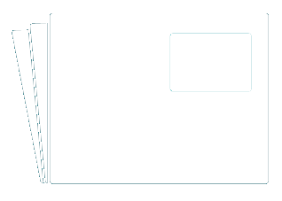

<mat-drawer-container class="side-menu" hasBackdrop="true">
  <mat-drawer #drawer mode="over">
    <button mat-button class="option" (click)="drawer.close()">
      <mat-icon>mic</mat-icon>
      Start Recording
    </button>
    <button mat-button class="option" (click)="drawer.close()">
      <mat-icon> vpn_key </mat-icon>
      Cambiar contraseña
    </button>
  </mat-drawer>
  <mat-drawer-content>
    <div class="nav-bar shadow fixed-top">
      <i
        class="material-icons options-icon"
        *ngIf="authService.isLoggedIn()"
        (click)="drawer.toggle()"
        >menu</i
      >
      
      <div class="elements">
        <button
          mat-button
          *ngIf="!authService.isLoggedIn()"
          (click)="loginDialog()"
        >
          Iniciar Sesión
        </button>
        <button mat-button *ngIf="authService.isLoggedIn()" (click)="logOut()">
          Cerrar sesión
        </button>
        <button mat-button>Desarrolladores</button>
      </div>
    </div>
    <router-outlet></router-outlet>
  </mat-drawer-content>
</mat-drawer-container>
